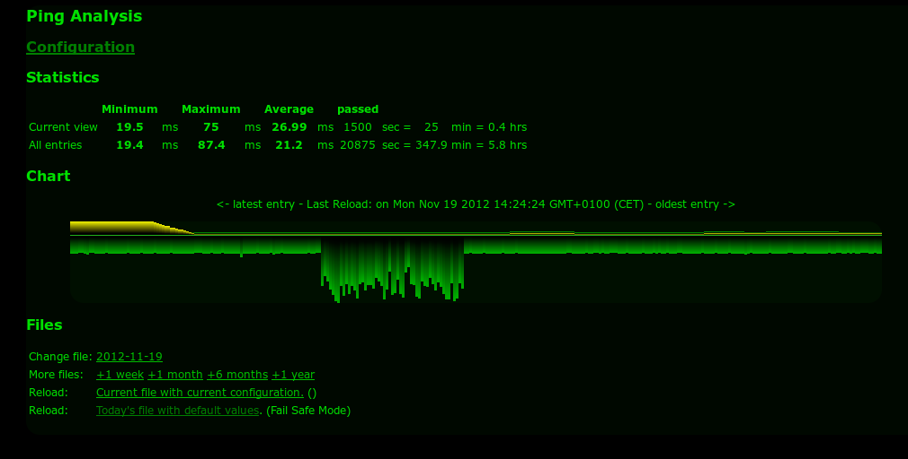

Ping Visualization and Analysis
January 8, 2016So this is the situation I am facing: I use an internet access that doesn’t feel reliable. Sometimes it’s really fast, sometimes it just feels being very unreliable. And I never know what part exactly is just failing: Is the the application that is slow, is it the WIFI, is it the Internet access.
So want I have been looking for is a reliable, long-term measurement of internet access speed. By speed I mean mainly round-trip time / latency. I looked at many tools, large ones (the ones that come from complete eco systems like Nagios or ecinga) small one (i.e. network usage tracking directly on your PC or Mac). The big ones are too much work and too much stuff that needs to be learned, understood, installed. The small ones don’t answer my question since they don’t do long term tracking and recording. And I don’t like complex stuff.
Then found something that is in the essence exactly what I have been looking for. Re-phrtase: If I would have started putting something together myself, this is what I would have built: It’s called Ping Visualization and Analysis and it is based on 2 components;
- One simple script that logs ping times (and by simple I mean realy simple!)
- One HTML page with some JavaScript that visualizes the ping times over time.
You can let the ping-logger run on stupid simple hardware. It can run day & night, gathering data. The format is plain. A sample:
Fri Jan 8 15:14:49 ICT 2016: 64 bytes from 185.40.248.50: icmp_seq=89 ttl=53 time=310.716 ms
Fri Jan 8 15:14:54 ICT 2016: 64 bytes from 185.40.248.50: icmp_seq=90 ttl=53 time=310.349 ms
Fri Jan 8 15:14:59 ICT 2016: 64 bytes from 185.40.248.50: icmp_seq=91 ttl=53 time=312.787 ms
Fri Jan 8 15:15:04 ICT 2016: 64 bytes from 185.40.248.50: icmp_seq=92 ttl=53 time=312.805 ms
Fri Jan 8 15:15:09 ICT 2016: 64 bytes from 185.40.248.50: icmp_seq=93 ttl=53 time=311.273 ms
Fri Jan 8 15:15:14 ICT 2016: 64 bytes from 185.40.248.50: icmp_seq=94 ttl=53 time=311.371 ms
Fri Jan 8 15:15:19 ICT 2016: 64 bytes from 185.40.248.50: icmp_seq=95 ttl=53 time=312.096 ms
Fri Jan 8 15:15:24 ICT 2016: 64 bytes from 185.40.248.50: icmp_seq=96 ttl=53 time=313.387 ms
Fri Jan 8 15:15:29 ICT 2016: 64 bytes from 185.40.248.50: icmp_seq=97 ttl=53 time=310.404 ms
Fri Jan 8 15:15:34 ICT 2016: 64 bytes from 185.40.248.50: icmp_seq=98 ttl=53 time=311.076 ms
Fri Jan 8 15:15:39 ICT 2016: 64 bytes from 185.40.248.50: icmp_seq=99 ttl=53 time=312.640 ms
Pretty simple, uh?! A simple ping with a timestamp in front. And the JS stuff reads it and makes a simple graph from it:

I just had to fix some small things to make it run on my Mac (the ping syntax was from another Unix slang).
What next?
So here is what I plan to improve (let’s see wether this really happens):
- Have the Sources GITted
- Improve the graph:
- The colors are a bit strange to me…
- It feels upside down
- Have labels on the y axis
- May be have them more like so
- May be look into log stash as visualization…
Addendum
Also within the context, and because Java is the development language of the year 2015: A java program to track the ping times to multiple end points